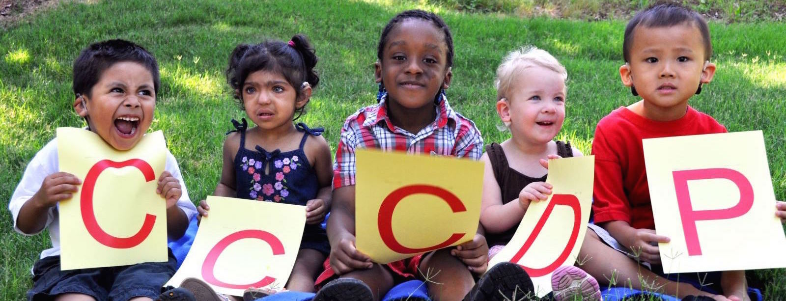

Jump to navigation
Donate to CASTLE
About CASTLE
Contact Us
Our Stories
Home
Duke MyChart
Patient login
Appointments
Call
855.855.6484
Quick links
Contact
Contact

Come back often for the latest announcements!
Learn More
Welcome to CASTLE
The CCCDP and CASTLE at UNC Ear and Hearing Center is a place where miracles happen for kids with hearing loss. Be sure to check back often for updates, new events and announcements. And thank you for your support!
Support UNC research and change lives
Donate to CASTLE